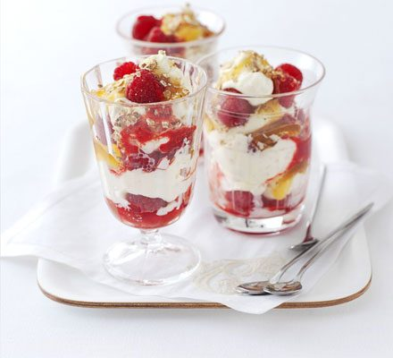

Cranachan

Description
Cranachan is a simple, traditional Scottish dessert made with cream, raspberries, oats and whisky. It is best made with fresh seasonal raspberries.
Ingredients
- 2 tbsp medium oatmeal/li>
- 300g fresh Scottish raspberries
- a little caster sugar
- 350ml doubl cream
- 2 tbsp heather honey
- 2-3 tbsp whisky, to taste
Method
- To toast the oatmeal, spread it out on a baking sheet and grill until it smells rich and nutty. It will not darken quickly, so use your sense of smell to tell you when it is nutty enough. Cool the oatmeal.
- Make a raspberry purée by crushing half the fruit and sieving. Sweeten this to taste with a little caster sugar. Whisk the double cream until just set, and stir in the honey and whisky, trying not to over-whip the cream. Taste the mix and add more of either if you feel the need.
- Stir in the oatmeal and whisk lightly until the mixture is just firm. Alternate layers of the cream with the remaining whole raspberries and purée in 4 serving dishes. Allow to chill slightly before eating.
Home